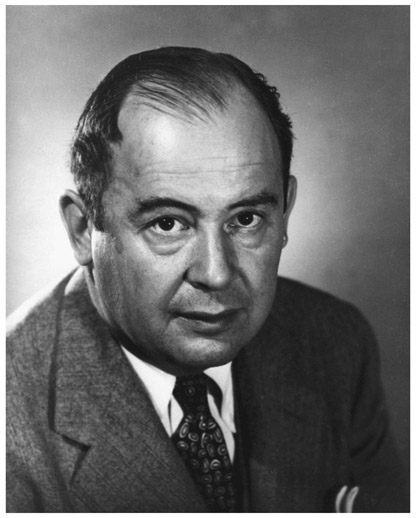

John von Neumann: Hungarian-American (1903–1957)
Before the advent of modern electronic calculators and computers, all mathematical calculations had to be carried out by humans using paper and pencil. Slide rules or some more sophisticated mechanical devices represented the only technological assistance. It’s quite hard to imagine what the world would look like today were this still the case. Did you know that the word “computer” originally referred to a person who carried out calculations or computations? In fact, the word continued with the same meaning until the middle of the twentieth century. Its meaning gradually changed as technological advances led to more and more efficient machines, eventually causing the extinction of “human computers.” Times have changed, and nowadays, prodigies in mental calculation are more likely to be seen on a television show than in a research center. However, in the nineteenth and early twentieth century, research agencies such as the National Advisory Committee for Aeronautics (NACA, founded in 1915 and then in 1958 becoming the newly founded National Aeronautics and Space Administration—NASA) still relied on human computers and, naturally, they scouted the highest-performance individuals in this profession. In particular, mental calculators were in great demand. Although there is no comparable job profile today, there are still people around who practice mental calculation very intensively. Every two years, the world’s best mental calculators are invited to compete for the Mental Calculation World Cup, which was first held in 2004 in Germany. It is a common misbelief that mathematicians are particularly good in mental calculation. As a matter of fact, many mathematicians even like to emphasize that they have problems with mental arithmetic. Although such statements often come with a pinch of coquetry, there is some truth behind it. A mathematician does not have to be good at mental arithmetic. People with limited mathematical education or interest often think that mathematics is “all about computing numbers,” which is not at all the case. Being an excellent mathematician but lousy in mental arithmetic is actually no contradiction. Of course, some outstanding mathematicians are, or were, also exceptional mental calculators aside. The American mathematician John von Neumann, one of the greatest mathematicians of the twentieth century, was a child prodigy in language, memorization, and mathematics. At the age of six, he could divide one eight-digit number by another in his head. Mental calculation was such a natural amusement to him that when he caught his mother staring aimlessly, he asked her: “What are you calculating?” He also possessed an amazing memory. A brief glance at a page of the telephone directory sufficed for him to memorize all its names and numbers. He made major contributions to a number of fields and published more

Figure 44.1. John von Neumann.
than 150 papers in his life. During World War II, von Neumann worked on the Manhattan Project, where he developed the mathematical models that were behind the explosive lenses and worked out key steps in the nuclear physics involved in the hydrogen bomb. By the way, the Manhattan Project is also the most famous modern example for the employment of “human computers” on a massive scale, and it should be mentioned that most of them were women.
John von Neumann was born János Neumann on December 28, 1903, in Budapest, which was then part of the Austro-Hungarian Empire. He was the eldest of three brothers. His father, Miksa (Max) Neumann, was a successful banker and held a doctorate in law. John’s mother came from a wealthy Jewish family. However, the family did not observe strict religious practices. In 1913, Emperor Franz Joseph elevated Max Neumann to nobility for his contribution to the then successful economy. His son later used the German form von Neumann where the “von” indicated the nobility title. Until the age of ten, John and his brothers were taught by various governesses, since at that time formal education did not begin earlier in Hungary. John was an exceptional case of a child prodigy. At the age of six, he was able to converse with his father in classical Greek and he showed an amazing memory. The Neumann family sometimes entertained guests with demonstrations of John’s memory by letting a guest select a random page of the phone book. After reading over it a few times, young John had memorized the names, addresses, and numbers; he could answer any question put to him. Later he was able to recite whole books such as Goethe’s Faust. By the age of eight, he was familiar with differential and integral calculus. However, he was particularly interested in history, and by reading a large number of books, he acquired an incredible historical knowledge before entering school. In 1911 von Neumann entered the Lutheran Gymnasium, which was one of the best schools in Budapest. At that time, Hungary had an excellent education system, which produced several outstanding mathematicians and physicists. Among the brilliant and creative minds who were educated in Budapest from their childhoods to their teens are Leó Szilárd (1898–1964), Eugene Wigner (1902–1995), Edward Teller (1908–2003), Paul Erdős (1913–1996), and Peter Lax (1926–), to name just a few. The concentration of great mathematicians who were educated in Budapest in the early twentieth century was so strong that Peter Lax once said, “You don’t have to be Hungarian to be a mathematician, but it helps.” Apart from the excellent school system, several other factors may have contributed to the emergence of this phenomenon, most notably the Eötvös Mathematics Competition (now renamed as Kürschák Competition), mathematical contests that, since 1894, have been open to Hungarian high school students in their senior year. This is the oldest modern mathematics competition in the world; the problems to solve focused on creativity and not on memorized knowledge. The ten best scorers were exempt from the very competitive entrance examinations at the university. Von Neumann’s exceptional giftedness was immediately recognized by his mathematics teacher, who organized private tutoring for him to promote his mathematical talent. At the age of 15, he was sent to the renowned mathematician Gábor Szegő (1895–1985) to study advanced calculus. Szegő was deeply impressed by von Neumann’s genius, and subsequently visited the von Neumann house twice a week to tutor the child prodigy. When von Neumann completed his school education, he was already collaborating with professional mathematicians. In spite of his very promising perspectives for a career as a mathematician in academia, his father did not want him to study mathematics. Academic positions for mathematicians in Hungary were not well paid and Max Neumann wanted his son to follow a more financially rewarding path in business or industry. The compromise on which they agreed was that he would study chemistry to become a chemical engineer in industry. Since von Neumann didn’t know very much about chemistry, he first took two-year non-degree courses in chemistry at the University of Berlin, after which he sat for and passed the entrance exam to the prestigious ETH Zurich. However, at the same time, von Neumann also entered Pázmány Péter University in Budapest as a PhD candidate in mathematics. Although he couldn’t attend any courses in Budapest, he achieved outstanding results in the examinations. He graduated as a chemical engineer from ETH Zurich in 1926 and simultaneously finished his PhD thesis in mathematics, seemingly without appreciable effort. He was then granted a fellowship from the Rockefeller Foundation to study mathematics under David Hilbert in Göttingen. He completed his habilitation in 1927 and became the youngest privat-docent in the history of the University of Berlin in 1928. Von Neumann published highly original mathematical papers at an incredible rate, quickly making him famous in the mathematical community and turning him into a star at academic conferences. By the end of 1929 he had already published thirty-two major papers. After a brief stay in Hamburg in the same year, he accepted an offer from Princeton University in New Jersey. Before moving to the United States, he married Marietta Kövesi in Budapest. After a few years of teaching at Princeton University, he became a mathematics professor at the newly founded Institute for Advanced Study at Princeton. Von Neumann anglicized his first name to John, keeping the German-aristocratic surname of von Neumann. During his first years in the United States, von Neumann continued to return to Europe during the summers and even kept academic posts in Germany, which he resigned when the Nazis came to power. In 1935, Marietta gave birth to a daughter, Marina. Two years later the couple divorced and in 1938, von Neumann married Klara Dan, whom he had met in Budapest during one of his European visits. At Princeton, von Neumann’s lifestyle was all but typical for a top mathematician. He enjoyed eating and drinking in company, and almost once a week, John and Klara gave a party at their home, thereby creating a kind of salon. Von Neumann loved jokes, especially Yiddish and “off-color” humor. His memory helped him to always have a joke ready, if a conversation got stuck.
While most mathematicians need a quiet environment for working and studying, von Neumann preferred noisy and chaotic environments. At Princeton he received complaints for regularly playing extremely loud German march music on his gramophone, disturbing colleagues in neighboring offices, including Albert Einstein. He often worked in the couple’s living room with the television playing loudly and even read books while driving his car. In combination with the fact that he was a rather reckless driver anyway, this led to frequent traffic tickets and car accidents. Reportedly, an intersection in Princeton was nicknamed “Von Neumann Corner” because of the many car accidents he had there.1 Despite his unconventional personality, he was generally regarded as the leading mathematician of his time. His genius and brilliant intuition for new mathematical theories enabled him to contribute seminal and path-breaking work in completely different branches of mathematics, as well as in theoretical physics and computer science. Von Neumann applied new mathematical methods to quantum theory and was the first to establish a rigorous mathematical framework for quantum mechanics, known as the Dirac–von Neumann axioms. He founded the field of game theory as a mathematical discipline. Game theory is the study of mathematical models of strategic interaction between rational decision makers, and is now used in economics, political science, philosophy, and computer science. Von Neumann’s inspiration for game theory was poker, a game he played occasionally. He realized that a mathematical model for poker that only uses probability theory is insufficient for a thorough analysis of the game, since players’ strategies are completely ignored. In particular, he wanted to formalize the idea of “bluffing,” a strategy that is meant to mislead other players and hide information from them. The beginning of his mathematical investigation of games can be marked with his 1928 article, “Theory of Parlor Games,” which can also be regarded as the initiation of modern game theory. In this article, he proved the so-called minimax theorem. The minimax theorem states that in zero-sum games in which players know at each time all moves that have taken place so far, there exists a pair of strategies for both players that allows each to minimize his maximum losses, hence the name minimax. (In a zero-sum game, each participant’s gain or loss of utility is exactly balanced by the losses or gains of the utility of the other participants.) Von Neumann continued his work in game theory, improving and extending his results to include more general games with more than two players. He soon noticed that the mathematical framework he was developing could become an important tool in economics. Consequently, he collaborated with the Austrian economist Oskar Morgenstern (1902–1977), a professor at Princeton University, with whom he published the paper Theory of Games and Economic Behavior in 1944. This groundbreaking text is one hundred pages long and established the interdisciplinary research field of game theory. When it became a book, it attracted also public interest. It is a classic foundational work that still belongs to the standard literature in mathematical economics. Moreover, it may also serve as valuable reading for anyone planning a career as a professional poker player.2 In the late 1930s, von Neumann began to study the mathematical modeling of explosions and soon became the leading authority in this field. This led to frequent military consultancies, and in 1943, von Neumann was invited to work on the Manhattan Project. He made principal contributions to the implosion design of the atomic bomb, enabling for a more efficient weapon.
Von Neumann was also a pioneer in the development of modern computing. After examining the army’s ENIAC (Electronic Numerical Integrator and Computer) during the war, von Neumann used his mathematical abilities to improve the computer’s logic design. He proposed a new design that embodied the “stored-program” concept that is now called the Von Neumann architecture. He was a consultant in the construction of the army’s EDVAC (Electronic Discrete Variable Automatic Computer), one of the earliest binary stored-program computers. In fact, he wrote in ink one of the first programs for EDVAC, a sorting algorithm, covering twenty-three pages. His wife, Klara, became one of the first computer programmers. Von Neumann was one the most influential mathematicians who ever lived. Edward Teller wrote that “Nobody knows all science, not even von Neumann did. But as for mathematics, he contributed to every part of it except number theory and topology. That is, I think, something unique.” Other mathematicians were stunned by von Neumann’s mental calculation abilities and his incredible speed. The Hungarian-American mathematician Paul Halmos (1916–2006) recounts a story told by physicist Nicholas Metropolis (1915–1999), concerning the speed of von Neumann’s calculations, when somebody asked von Neumann to solve the famous fly puzzle:
Two bicyclists start 20 miles apart and head toward each other, each going at a steady rate of 10 mph. At the same time a fly that travels at a steady 15 mph starts from the front wheel of the southbound bicycle and flies to the front wheel of the northbound one, then turns around and flies to the front wheel of the southbound one again, and continues in this manner till he is crushed between the two front wheels. Question: what total distance did the fly cover? The slow way to find the answer is to calculate what distance the fly covers on the first, southbound, leg of the trip, then on the second, northbound, leg, then on the third, etc., etc., and, finally, to sum the infinite series so obtained.
The quick way is to observe that the bicycles meet exactly one hour after their start, so that the fly had just an hour for his travels; the answer must therefore be 15 miles.
When the question was put to von Neumann, he solved it in an instant, and thereby disappointed the questioner: “Oh, you must have heard the trick before!” “What trick?” asked von Neumann; “All I did was sum the geometric series.” That meant doing it the long way—instantly!
After the war, von Neumann served on the General Advisory Committee of the US Atomic Energy Commission, and later as one of its commissioners. He was a consultant to a number of organizations, including the US Air Force, the US Army’s Ballistic Research Laboratory, the Armed Forces Special Weapons Project, and the Lawrence Livermore National Laboratory. In 1955, von Neumann was diagnosed with cancer. He died at age 53 on February 8, 1957, at the Walter Reed Army Medical Center in Washington, DC, under military security lest he reveal military secrets while heavily medicated. His mathematical legacy is perhaps best described in Peter Lax’s foreword to von Neumann’s Selected Letters, edited by Miklós Rédei: “To gain a measure of von Neumann’s achievements, consider that had he lived a normal span of years, he would certainly have been a recipient of a Nobel Prize in economics. And if there were Nobel Prizes in computer science and mathematics, he would have been honored by these, too. So the writer of these letters should be thought of as a triple Nobel laureate or, possibly, a 31/2-fold winner, for his work in physics, in particular, quantum mechanics.”